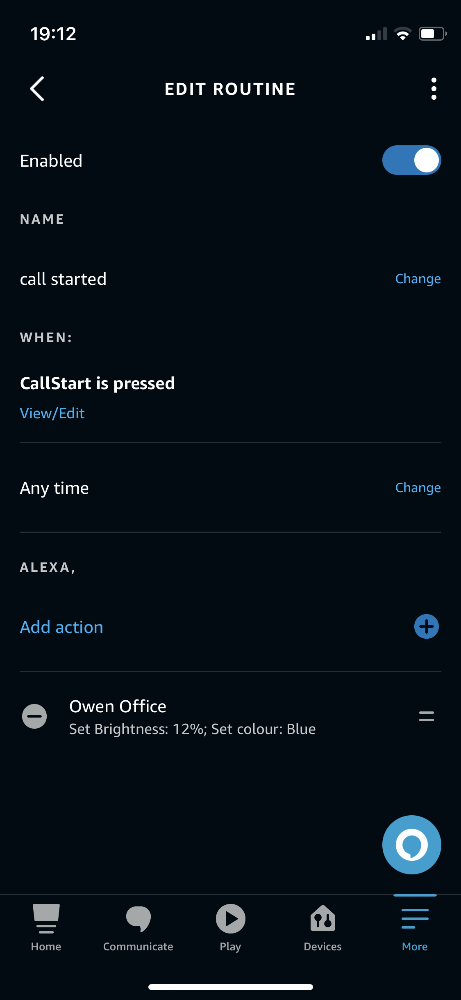

Full disclosure, this is a pretty niche blog post and the prerequisites for getting it working were enough to make me consider not posting.
So what is it about? When I start a Zoom call, I want to dim the lights in my office for no other reason than I want to.

What it takes to achieve this dubious setup
- Amazon Alexa account
- An Amazon Echo Dot
- 4 x GU10 RGB bulbs
- A mkzense.com subscription ($5/yr)
- Some filthy code
- A couple of Alexa Routines
Getting it started
Alexa Initial Setup
First things first, install the GU10s or whatever light bulbs you’re going to be using and register them with Alexa. In my case, this required adding their associated app then discovering them in the Alexa app.
It’s useful later if you’ve grouped them, mine are a group called Owen Office
Install the IFTTTTrigger Skill in Alexa and subscribe for a year. I looked at doing the same thing they’re doing, but I don’t think its achievable to host the API Gateway and Lambda for sufficiently cheap enough to make it worth not subscribing instead.
When enabling the skill, you’ll be asked for some Triggers, I’ve called mine CallStart and CallEnd but you can do whatever.
Now, go to Mkzense Webhook to submit your email address and get sent a token.
The last thing to do is set up the routines;
Name: Anything sensible
Trigger: Smart Home -> CallStart
Add Action: Smart Home -> Groups -> Owen Office -> Select All
Now, I have set mine to turn on the lights, set the brightness to 12% and the colour to blue - you do you!!
It’ll look something like this

Triggering the endpoint
This is where it gets a bit niche - I briefly looked at if there was hooks in Zoom where I could get the start and end of a call, but that wasn’t working so I looked a the webcam and if it had device hooks.
Eventually, I settled on tailing the the log on my MacBook. I used the work of Max Schaefer for inspiration.
Essentially, an external process is started with the log command to stream and read the entries looking for Cameras changed events.
The main logic of the stream processing is here
cmd := exec.Command("log", args...)
stdout, err := cmd.StdoutPipe()
if err != nil {
return err
}
stderr, err := cmd.StderrPipe()
if err != nil {
return err
}
go func() {
logs.m.Lock()
defer logs.m.Unlock()
cmd.Start()
defer cmd.Process.Kill()
// drop first message
bufio.NewReader(stdout).ReadLine()
dec := json.NewDecoder(stdout)
for {
select {
case <-logs.exit:
return
default:
log := Log{}
if err := dec.Decode(&log); err != nil {
continue
} else {
logs.Channel <- log
}
}
}
}()
And consuming that log data is my main monitoring function.
logs := newLogTail()
for {
func() {
defer func() {
if r := recover(); r != nil {
fmt.Println("Recovered ", r)
}
}()
if err := logs.StartGathering(); err != nil {
fmt.Println("Log gathering failed with error: %w", err)
return
}
for log := range logs.Channel {
if strings.Contains(log.EventMessage, "Cameras changed") {
switch log.EventMessage {
case "Cameras changed to []":
fmt.Printf("%s: Camera disconnected\n", log.Timestamp)
http.Get("https://mkzense.com/webhook/alexa/<mytokengoeshere>/CallEnd")
default:
fmt.Printf("%s: Camera connected\n", log.Timestamp)
http.Get("https://mkzense.com/webhook/alexa/<mytokengoeshere>/CallStart"
}
}
}
}()
}
There isn’t a great deal to explain - the logs get polled, if the event has Cameras changed in it then the even message is looked at to see there is an empty slice - which means its a disconnect, otherwise its a camera coming to life.
Depending on the event, I either call the CallStart trigger or the CallEnd trigger and my Alexa routine is activated.
Running as a service
The last thing to do is running webcam-watcher as a service. I have zero experience of this with a Mac so I Googled and found LaunchAgents are a way to go.
<?xml version="1.0" encoding="UTF-8"?>
<!DOCTYPE plist PUBLIC "-//Apple//DTD PLIST 1.0//EN" "http://www.apple.com/DTDs/PropertyList-1.0.dtd">
<plist version="1.0">
<dict>
<key>Label</key>
<string>com.owenrumney.webcam-watcher</string>
<key>Program</key>
<string>/Users/owen/code/owenrumney/webcam-watcher/webcam-watcher</string>
<key>RunAtLoad</key>
<true/>
<key>StandardErrorPath</key>
<string>/tmp/com.owenrumney.webcam-watcher.stderr</string>
<key>StandardOutPath</key>
<string>/tmp/com.owenrumney.webcam-watcher.stdout</string>
</dict>
</plist>
This launch agent goes in ~/Library/LaunchAgents/com.owenrumney.webcam-watcher.plist
Then load and start it
launchctl load ~/Library/LaunchAgents/com.owenrumney.webcam-watcher.plist
launchctl start com.owenrumney.webcam-watcher
You can check its actually running using
ps aux | grep webcam
Getting the codez
If all that hasn’t put you off - you can get the code from the GitHub Repo